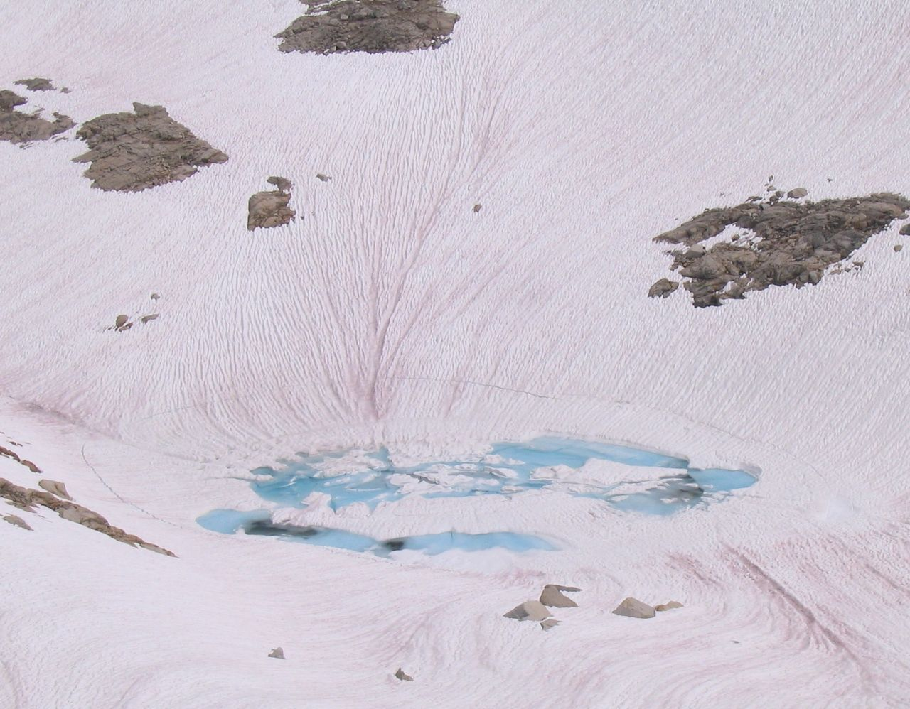

Watermelon snow, also called snow algae, pink snow, red snow, or blood snow, is Chlamydomonas nivalis, a species of green algae containing a secondary red carotenoid pigment (astaxanthin) in addition to chlorophyll. Unlike most species of fresh-water algae, it is cryophilic (cold-loving) and thrives in freezing water. Its specific epithet, nivalis, is from Latin and refers to snow.
This type of snow is common during the summer in alpine and coastal polar regions worldwide, such as the Sierra Nevada of California. Here, at altitudes of 10,000 to 12,000 feet (3,000–3,600 m), the temperature is cold throughout the year, and so the snow has lingered from winter storms. Compressing the snow by stepping on it or making snowballs leaves it looking red. Walking on watermelon snow often results in getting bright red soles and pinkish trouser cuffs.
